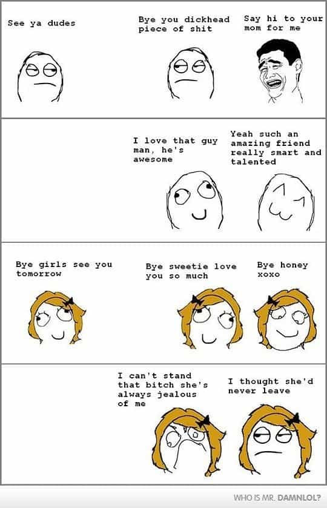

One Englishman promoting the great libertarian values and sociobiological qualities of the West. Visit my page, That Libertarian Chap, here - https://www.facebook.com/thatlibertarianchap


A recent study by the well-known Professor Robert Dunbar has shown ‘a very striking sex difference between male and female friendships.’ In the few days since Dunbar gave a talk on the results, a number of articles have written of the superficiality of male relationships; rather, they focused on Dunbar’s view that ‘women clearly have much more intense close friendships…very like romantic relationships…if they break, they break catastrophically.’ Whereas men are painted as superficial – ‘With guys it is out of sight out of mind. They just find four more guys to go drinking with.’ But, do the findings really indicate that women are friendlier or more sociable than men?
Now, of course, feminists will tell you that masculinity is inevitably oppressive and abusive, especially of the more supposedly feminine qualities of love, gentility and empathy. But, this misconception is totally unfair. As Moore and Gillette point out, in King, Warrior, Magician, Lover: Rediscovering the Archetypes of the Mature Masculine, oppressive forms of patriarchy are simply based on the same juvenile fear of Lord of the Flies; the ‘mature masculine’ psychology, however, is ‘marked by calm, compassion, clarity of vision, and generativity.’
Indeed, science seems to agree, not only that hell hath no fury like a woman scorned, but also that women seem predisposed to scorning. For instance, women tend to dominate the judgmental and feelings-based personality types in Myers-Briggs Type Indicator tests. Naturally, when it comes to maternity, evolution has favoured those women with greater maternal instincts but this doesn’t mean women are necessarily the more sociable sex; nor does it mean that men are cold, superficial loners.
Whilst men had to go out hunting and patrolling, working together and trusting each other, women did not. This explains why Dunbar found that men can readily welcome and be welcomed into new groups of males—‘What held up their friendships was doing stuff together.’ Women, however, had to compete with other women over the loyalty of the alphas to their brood. It is easy, therefore, to see how being ‘bitchy’ or ‘catty’ evolved to try to lower the reputation of other women in the group and, thus, level the playing field. Furthermore, it also explains Dunbar’s finding that long-distance female relationships can be maintained simply by gossiping on the phone.
In the real world, oft forgotten by the left, men love spending time with their ‘honour group’, yet the actresses of Sex and the City could barely stand each other’s company long enough to create a fictional replica for women. Certainly, the reason women have such intimate relationships built on deep trust and loyalty has nothing to do with being friendlier or less superficial than men. This doesn’t make one sex better than the other, it just helps us understand what we are and why Emily Blunt calling women to just be less judgmental of each other is ignorant.

Another study has concluded that women are ‘more sensitive than men to social exclusion, and when they feel threatened by the prospect of being left out, a woman’s first response may be to socially exclude a third party.’ So, because ostracism of any kind would have meant certain doom for oneself and one’s progeny, females have evolved to be more cliquey and those alliances they do form are very high trust and with strong expectations of loyalty. Thus, Dunbar’s conclusion regarding their relationships’ intensity—‘if they break, they break catastrophically.’
Now, I love women—the best relationships in my life have been with women—my grandmother, my mother, my wife, my daughter. I don’t want to imagine a world without mothers and daughters. But, equally, I love men—really manly men! We face such a dearth of true masculinity in our time, twisting the findings of Dunbar’s study to suit commonplace misandry in the mainstream media and academia is beyond unhelpful.
I think the time for apologizing about and even concealing biological trends must end immediately and the time for celebrating alpha males must commence. Men are the more social animal and the friendlier sex but feminists want women to take all the credit, imagining a world of sugar and spice vs. slugs and snails and puppy dogs’ tails.
The fact is that the masculinity deficit we face in the West is due in no short part to mischaracterizing men. Feminists have denigrated masculinity for decades and, ironically, produced a generation of men full of fear and shame, readily descending into the very angry and abusive, Lord of the Flies-esque behaviour the feminists claim to oppose.
Julius Evola had it right, we need a return of kings, a return of honourable masculinity; we should be celebrating masculinity and femininity for what they are and pursuing their ideal forms. Bashing male relationships and exaggerating female ones is completely unfair, especially if you want a reputation as the fairer sex.
Read More: US Government Goes Full Retard And Backs War Draft For Women